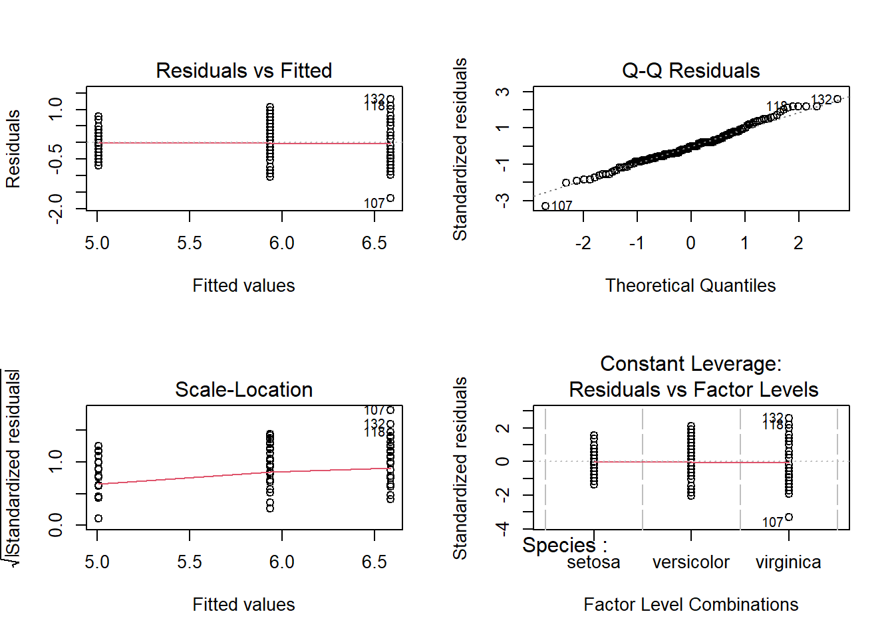

iris_anova <- lm(Sepal.Length~Species, iris)Compare means among groups
Remember you should
- add code chunks by clicking the Insert Chunk button on the toolbar or by pressing Ctrl+Alt+I to answer the questions!
- knit your file to produce a markdown version that you can see!
- save your work often
- commit it via git!
- push updates to github
Overview
This practice reviews the Compare means among groups lecture.
Examples
We will run ANOVA’s using the lm function to connect them to other test. First, build the model
Then use the object it created to test assumptions
par(mfrow = c(2,2))
plot(iris_anova)
If assumptions are met, check the p-value using the summary or Anova function.
summary(iris_anova)
Call:
lm(formula = Sepal.Length ~ Species, data = iris)
Residuals:
Min 1Q Median 3Q Max
-1.6880 -0.3285 -0.0060 0.3120 1.3120
Coefficients:
Estimate Std. Error t value Pr(>|t|)
(Intercept) 5.0060 0.0728 68.762 < 2e-16 ***
Speciesversicolor 0.9300 0.1030 9.033 8.77e-16 ***
Speciesvirginica 1.5820 0.1030 15.366 < 2e-16 ***
---
Signif. codes: 0 '***' 0.001 '**' 0.01 '*' 0.05 '.' 0.1 ' ' 1
Residual standard error: 0.5148 on 147 degrees of freedom
Multiple R-squared: 0.6187, Adjusted R-squared: 0.6135
F-statistic: 119.3 on 2 and 147 DF, p-value: < 2.2e-16library(car)Loading required package: carDataAnova(iris_anova, type = "III")Anova Table (Type III tests)
Response: Sepal.Length
Sum Sq Df F value Pr(>F)
(Intercept) 1253.00 1 4728.16 < 2.2e-16 ***
Species 63.21 2 119.26 < 2.2e-16 ***
Residuals 38.96 147
---
Signif. codes: 0 '***' 0.001 '**' 0.01 '*' 0.05 '.' 0.1 ' ' 1If the overall test is significant, carry out post hoc tests (Tukey shown here for all pairs, as most common)
library(multcomp)Loading required package: mvtnormLoading required package: survivalLoading required package: TH.dataLoading required package: MASS
Attaching package: 'TH.data'The following object is masked from 'package:MASS':
geysercompare_cont_tukey <- glht(iris_anova, linfct = mcp(Species = "Tukey"))
summary(compare_cont_tukey)
Simultaneous Tests for General Linear Hypotheses
Multiple Comparisons of Means: Tukey Contrasts
Fit: lm(formula = Sepal.Length ~ Species, data = iris)
Linear Hypotheses:
Estimate Std. Error t value Pr(>|t|)
versicolor - setosa == 0 0.930 0.103 9.033 <1e-08 ***
virginica - setosa == 0 1.582 0.103 15.366 <1e-08 ***
virginica - versicolor == 0 0.652 0.103 6.333 <1e-08 ***
---
Signif. codes: 0 '***' 0.001 '**' 0.01 '*' 0.05 '.' 0.1 ' ' 1
(Adjusted p values reported -- single-step method)If assumptions are not met, we can use the Kruskal Wallis non-parametric test and associated post hoc tests.
kruskal.test(Sepal.Length ~ Species, data = iris)
Kruskal-Wallis rank sum test
data: Sepal.Length by Species
Kruskal-Wallis chi-squared = 96.937, df = 2, p-value < 2.2e-16pairwise.wilcox.test(iris$Sepal.Length,
iris$Species,
p.adjust.method="holm")
Pairwise comparisons using Wilcoxon rank sum test with continuity correction
data: iris$Sepal.Length and iris$Species
setosa versicolor
versicolor 1.7e-13 -
virginica < 2e-16 5.9e-07
P value adjustment method: holm or a bootstrap alternative
library(WRS2)
t1waybt(Sepal.Length~Species, iris)Call:
t1waybt(formula = Sepal.Length ~ Species, data = iris)
Effective number of bootstrap samples was 599.
Test statistic: 111.9502
p-value: 0
Variance explained: 0.716
Effect size: 0.846 bootstrap_post_hoc <- mcppb20(Sepal.Length~Species, iris)
p.adjust(as.numeric(bootstrap_post_hoc$comp[,6]), "holm")[1] 0 0 0For 2 groups, the boot.t.test function in the MKinfer package is also an option.
Just for practice
1
Use the iris dataset in R to determine if petal length differs among species. Do this problems using ANOVA, Kruskal-Wallis, and bootstrapping methods. Make sure you can plot the data and carry out multiple comparison methods as needed. Also be sure to understand the use of coefficients and adjusted R2 values and where to find them.
2
Data on plant heights (in cm) for plants grown with a new and old formulation of fertilizer can be found at
Analyze this data using the t.test function and the lm function to convince yourself that t-tests are special cases of ANOVAs, which are special cases of linear models!
For the following questions, pick the appropriate method for analyzing the question. Use a plot of the data and/or model analysis to justify your decision. Make sure you can carry out multiple comparison methods as needed. Also be sure to understand the use of coefficients and adjusted R2 values and where to find them.
3
Data on sugar cane yield for multiple fields is available using
read.table(“https://docs.google.com/spreadsheets/d/e/2PACX-1vRjstKreIM6UknyKFQCtw2_Q6itY9iOAVWO1hUNZkBFL8mwVssvTevqgzV22YDKCUeJq0HBDrsBrf5O/pub?gid=971470377&single=true&output=tsv”, header = T, stringsAsFactors = T)
More info on the data can be found at http://www.statsci.org/data/oz/cane.html. Is there evidence that location (DistrictPosition column) impacts yield (Tonn.Hect column)? If so, which areas are driving this distance?
4
Data on FEV (forced expiratory volume), a measure of lung function, can be found at
http://www.statsci.org/data/general/fev.txt
More information on the dataset is available at
http://www.statsci.org/data/general/fev.html.
Is there evidence that FEV depends on gender? If so, which gender has the higher FEV score? How much variance does gender explain?
5
The following data are human blood clotting times (in minutes) of individuals given one of two different drugs.
| Drug B | Drug G |
|---|---|
| 8.8 | 9.9 |
| 8.4 | 9.0 |
| 7.9 | 11.1 |
| 8.7 | 9.6 |
| 9.1 | 8.7 |
| 9.6 | 10.4 |
| 9.5 |
Test the hypothesis that the mean clotting times are equal for the two groups
- Estimating the variance from the data
- Using rank transform analysis
- Using a permutation test
- Using a bootstrap test
Test the hypothesis that the mean clotting times are equal for the two groups
- Estimating the variance from the data
- Using rank transform analysis
- Using a permutation test
- Using a bootstrap test
6
(Example from Handbook on Biological Statistics) Odd (stunted, short, new) feathers were compared in color to typical feathers in Northern Flickers (Colaptes auratus) (Wiebe and Bortolotti 2002) . Data is at
https://raw.githubusercontent.com/jsgosnell/CUNY-BioStats/master/datasets/wiebe_2002_example.csv
Test the hypothesis that odd and typical feathers did not differ using
- a Student’s t test and/or lm
- a rank test
- bootstrapping
Note we will return to this question next week!
References
Wiebe, Karen L., and Gary R. Bortolotti. 2002. “Variation in Carotenoid-Based Color in Northern Flickers in a Hybrid Zone.” The Wilson Bulletin 114 (3): 393–400. http://www.jstor.org/stable/4164474.